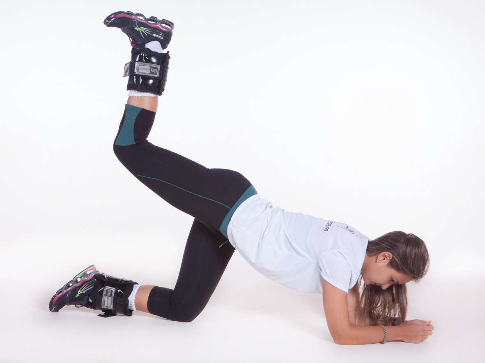
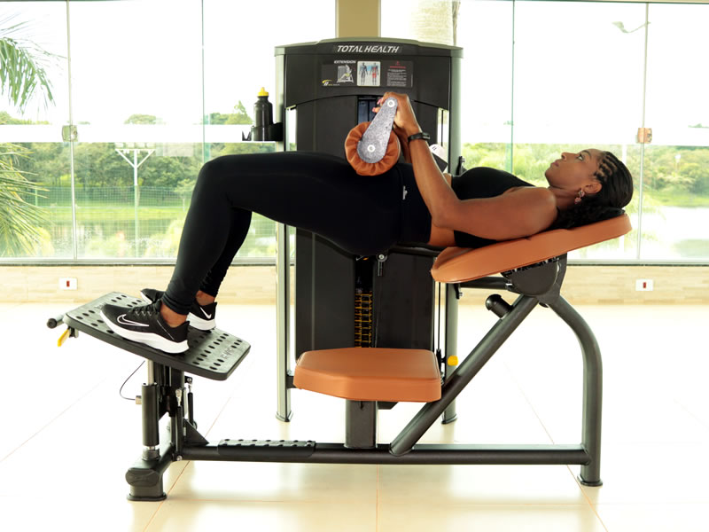
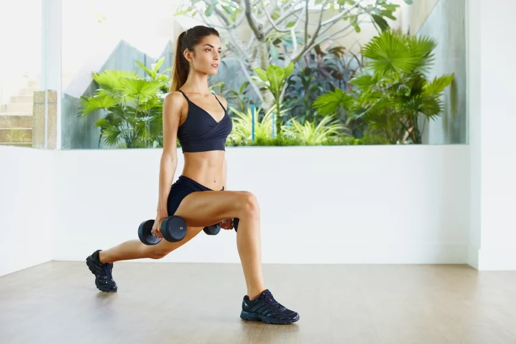
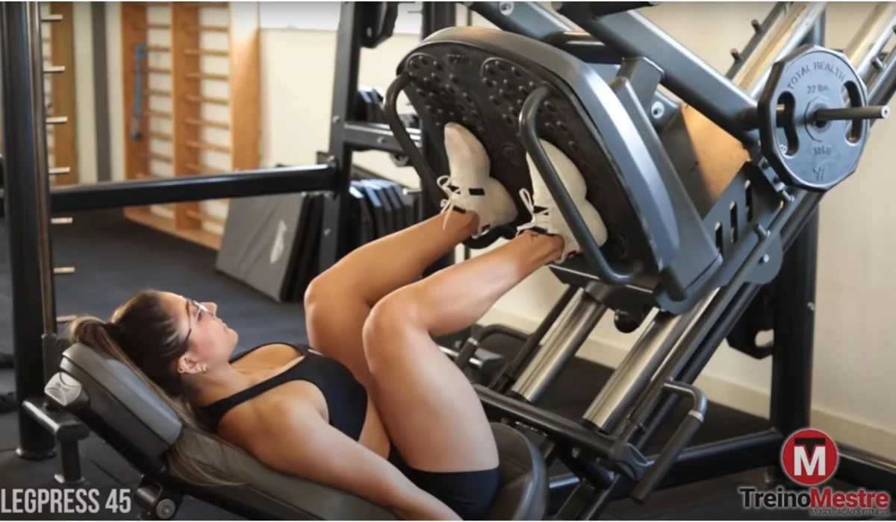

GLUTEO 4 Apoios com Caneleira - 3X15 CADA LADO, SEM DESCANSO.
ABDUTORA 4X15/15 - DROP SET EM TODAS AS SÉRIES BEM LENTO DEIXA QUEIMAR

ELEVAÇÃO PELVICA NA BARRA LIVRE OU MAQUINA - 4X12
Na primeira Serie mais leve para aquecer e depois as outras 3 Series não passe de 12, passou aumente a carga.
AFUNDO COM HALTERES - 4X12 CADA PERNA
Força no calcanhar, bumbum empinado, peito estufado
LEG PRESS 45 - 4X12/10/10/8
Controle na descida e afunde o calcanhar para subir - Aumentando a carga em cada serie.
CADEIRA EXTENSORA - 3X15/12/10
Aumentando o peso em cada série.